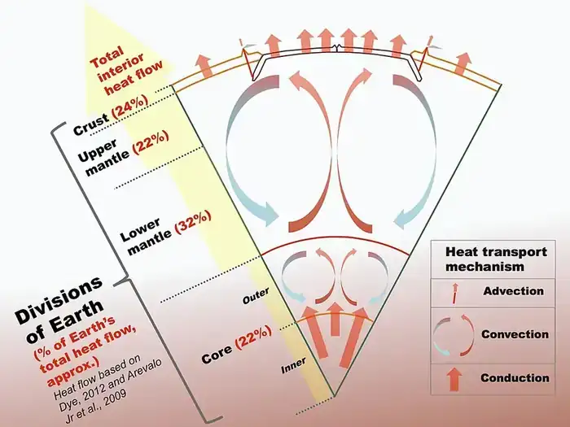

The claim
In 1996, Song and Richards reported that seismic waves travelling through the inner core arrived slightly earlier or later depending on when the earthquake occurred, and interpreted the difference as the inner core rotating faster than the mantle — a 'super-rotation' of a few degrees per year. The inner core is solid iron, surrounded by liquid iron, so differential rotation is physically plausible.
Maps, diagrams and images


The method depends on repeating earthquakes: events in the same place, recorded at the same station, years apart. If the core has moved, the path through it changes and so does the arrival time.
The argument
The signal is small, the repeating earthquakes are few, and the assumption that two earthquakes in the same place produce identical source signals is a strong one. Subsequent studies using different datasets and different methods produced a range of answers: fast super-rotation, slow super-rotation, oscillation, and no resolvable rotation at all.
In 2023 a pair of papers reported that the inner core's rotation had slowed, possibly pausing or reversing relative to the mantle — an oscillation rather than a steady spin. Other seismologists argued the data could not distinguish that from noise. The disagreement is not about whether the inner core can rotate; it is about whether the measurements are good enough to say it does.
Documented: the inner core exists, is solid, and is decoupled from the mantle by a liquid outer core.
Contested: whether it rotates differentially, and if so how fast and in which direction.
The core problem: few repeating sources, small travel-time differences, and source effects that can mimic rotation.
What would settle it: a much denser set of repeating earthquakes, or a different observable — such as core-sensitive normal modes or a longer instrumental record.
The honest position: a real physical possibility, with a signal at the edge of what the data can resolve.
Why it is in the archive
Because it is a case where the disagreement is entirely about measurement, and the participants say so. There is no fringe here, no motive, and no hidden claim: just a hard problem at the limit of the instruments, which is what most live debates in geophysics look like.
Open resources on this topic
- PapersOpen-access articles: DOAJ · PubMed Central · Internet Archive Scholar
- BooksPublic-domain and borrowable copies: Open Library · Project Gutenberg · Google Books · Internet Archive
More images
Cite this page
Momin, S. (2026). The Inner Core's Spin. The Larger World Archive. https://drsamonline.github.io/LARGE_GLOBE/inner-core-spin.htmlMomin, Sohil. “The Inner Core's Spin.” The Larger World Archive, 2026, https://drsamonline.github.io/LARGE_GLOBE/inner-core-spin.html.Momin, Sohil. “The Inner Core's Spin.” The Larger World Archive, 2026. https://drsamonline.github.io/LARGE_GLOBE/inner-core-spin.html.@misc{the2026inner,
author = {Momin, Sohil},
title = {The Inner Core's Spin},
year = {2026},
howpublished = {The Larger World Archive},
url = {https://drsamonline.github.io/LARGE_GLOBE/inner-core-spin.html},
note = {Last reviewed 20 November 2026}
}Last reviewed 20 November 2026 · Corrections policy · this page is not peer reviewed
Sources for this page
- Wikipedia, “Earth's inner core” — structure, evidence and rotation studiesen.wikipedia.org
- Wikipedia, “Seismology” — how the interior is measureden.wikipedia.org
- Wikipedia, “Structure of the Earth” — the layers the waves crossen.wikipedia.org
- Wikipedia, “Core–mantle boundary” — the interface that makes rotation possibleen.wikipedia.org